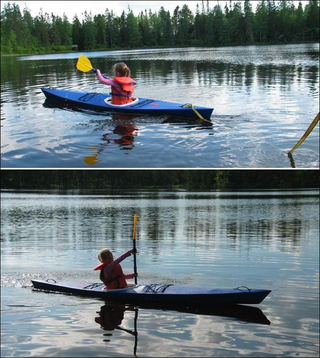

Sea Flea by Don T. (CA)
Menu
Previous Page
Next Page

Don, from New Brunswick, Canada built this
Sea Flea
for his daughter. The frame has 3/4" pine stringers, plywood forms, and a 22oz vinyl skin. Use the
{Back}
key to return.